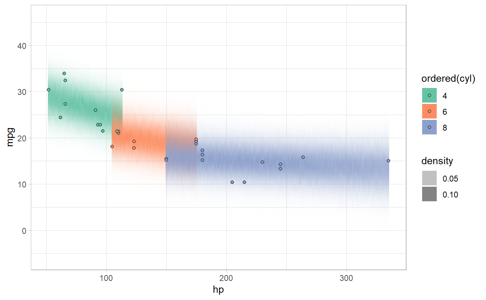

R/predict_curve.R
density_bins.RdGenerates a data frame of bins representing the kernel density (or histogram) of a vector, suitable for use in generating predictive distributions using predict_curve.
density_bins(x, n = 101, ...) histogram_bins(x, n = 30, breaks = n, ...)
| x | A numeric vector |
|---|---|
| n | Number of bins |
| ... | |
| breaks | Used to set bins for |
A data frame representing bins and their densities with the following columns:
Bin midpoint
Lower endpoint of each bin
Upper endpoint of each bin
Density estimate of the bin
These functions are simple wrappers to density and
hist that compute density estimates and return their results
in a consistent format: a data frame of bins suitable for use with
predict_curve.
density_bins computes a kernel density estimate using
density.
histogram_bins computes a density histogram using hist.
See add_predicted_draws and stat_lineribbon for a better approach. This
function may be deprecated in the future.
#> #>#> #> #>#> #> #>library(tidyr)#> #>#> #> #>if ( require("rstanarm", quietly = TRUE) && require("modelr", quietly = TRUE) ) { theme_set(theme_light()) m_mpg = stan_glm(mpg ~ hp * cyl, data = mtcars) step = 1 mtcars %>% group_by(cyl) %>% data_grid(hp = seq_range(hp, by = step)) %>% add_predicted_draws(m_mpg) %>% summarise_all(list) %>% mutate(densities = map(.prediction, density_bins)) %>% unnest(densities) %>% ggplot() + geom_rect(aes( xmin = hp - step/2, ymin = lower, ymax = upper, xmax = hp + step/2, fill = ordered(cyl), alpha = density )) + geom_point(aes(x = hp, y = mpg, fill = ordered(cyl)), shape = 21, data = mtcars) + scale_alpha_continuous(range = c(0, 1)) + scale_fill_brewer(palette = "Set2") }#> #> SAMPLING FOR MODEL 'continuous' NOW (CHAIN 1). #> Chain 1: #> Chain 1: Gradient evaluation took 0 seconds #> Chain 1: 1000 transitions using 10 leapfrog steps per transition would take 0 seconds. #> Chain 1: Adjust your expectations accordingly! #> Chain 1: #> Chain 1: #> Chain 1: Iteration: 1 / 2000 [ 0%] (Warmup) #> Chain 1: Iteration: 200 / 2000 [ 10%] (Warmup) #> Chain 1: Iteration: 400 / 2000 [ 20%] (Warmup) #> Chain 1: Iteration: 600 / 2000 [ 30%] (Warmup) #> Chain 1: Iteration: 800 / 2000 [ 40%] (Warmup) #> Chain 1: Iteration: 1000 / 2000 [ 50%] (Warmup) #> Chain 1: Iteration: 1001 / 2000 [ 50%] (Sampling) #> Chain 1: Iteration: 1200 / 2000 [ 60%] (Sampling) #> Chain 1: Iteration: 1400 / 2000 [ 70%] (Sampling) #> Chain 1: Iteration: 1600 / 2000 [ 80%] (Sampling) #> Chain 1: Iteration: 1800 / 2000 [ 90%] (Sampling) #> Chain 1: Iteration: 2000 / 2000 [100%] (Sampling) #> Chain 1: #> Chain 1: Elapsed Time: 0.293 seconds (Warm-up) #> Chain 1: 0.262 seconds (Sampling) #> Chain 1: 0.555 seconds (Total) #> Chain 1: #> #> SAMPLING FOR MODEL 'continuous' NOW (CHAIN 2). #> Chain 2: #> Chain 2: Gradient evaluation took 0 seconds #> Chain 2: 1000 transitions using 10 leapfrog steps per transition would take 0 seconds. #> Chain 2: Adjust your expectations accordingly! #> Chain 2: #> Chain 2: #> Chain 2: Iteration: 1 / 2000 [ 0%] (Warmup) #> Chain 2: Iteration: 200 / 2000 [ 10%] (Warmup) #> Chain 2: Iteration: 400 / 2000 [ 20%] (Warmup) #> Chain 2: Iteration: 600 / 2000 [ 30%] (Warmup) #> Chain 2: Iteration: 800 / 2000 [ 40%] (Warmup) #> Chain 2: Iteration: 1000 / 2000 [ 50%] (Warmup) #> Chain 2: Iteration: 1001 / 2000 [ 50%] (Sampling) #> Chain 2: Iteration: 1200 / 2000 [ 60%] (Sampling) #> Chain 2: Iteration: 1400 / 2000 [ 70%] (Sampling) #> Chain 2: Iteration: 1600 / 2000 [ 80%] (Sampling) #> Chain 2: Iteration: 1800 / 2000 [ 90%] (Sampling) #> Chain 2: Iteration: 2000 / 2000 [100%] (Sampling) #> Chain 2: #> Chain 2: Elapsed Time: 0.289 seconds (Warm-up) #> Chain 2: 0.295 seconds (Sampling) #> Chain 2: 0.584 seconds (Total) #> Chain 2: #> #> SAMPLING FOR MODEL 'continuous' NOW (CHAIN 3). #> Chain 3: #> Chain 3: Gradient evaluation took 0 seconds #> Chain 3: 1000 transitions using 10 leapfrog steps per transition would take 0 seconds. #> Chain 3: Adjust your expectations accordingly! #> Chain 3: #> Chain 3: #> Chain 3: Iteration: 1 / 2000 [ 0%] (Warmup) #> Chain 3: Iteration: 200 / 2000 [ 10%] (Warmup) #> Chain 3: Iteration: 400 / 2000 [ 20%] (Warmup) #> Chain 3: Iteration: 600 / 2000 [ 30%] (Warmup) #> Chain 3: Iteration: 800 / 2000 [ 40%] (Warmup) #> Chain 3: Iteration: 1000 / 2000 [ 50%] (Warmup) #> Chain 3: Iteration: 1001 / 2000 [ 50%] (Sampling) #> Chain 3: Iteration: 1200 / 2000 [ 60%] (Sampling) #> Chain 3: Iteration: 1400 / 2000 [ 70%] (Sampling) #> Chain 3: Iteration: 1600 / 2000 [ 80%] (Sampling) #> Chain 3: Iteration: 1800 / 2000 [ 90%] (Sampling) #> Chain 3: Iteration: 2000 / 2000 [100%] (Sampling) #> Chain 3: #> Chain 3: Elapsed Time: 0.278 seconds (Warm-up) #> Chain 3: 0.284 seconds (Sampling) #> Chain 3: 0.562 seconds (Total) #> Chain 3: #> #> SAMPLING FOR MODEL 'continuous' NOW (CHAIN 4). #> Chain 4: #> Chain 4: Gradient evaluation took 0 seconds #> Chain 4: 1000 transitions using 10 leapfrog steps per transition would take 0 seconds. #> Chain 4: Adjust your expectations accordingly! #> Chain 4: #> Chain 4: #> Chain 4: Iteration: 1 / 2000 [ 0%] (Warmup) #> Chain 4: Iteration: 200 / 2000 [ 10%] (Warmup) #> Chain 4: Iteration: 400 / 2000 [ 20%] (Warmup) #> Chain 4: Iteration: 600 / 2000 [ 30%] (Warmup) #> Chain 4: Iteration: 800 / 2000 [ 40%] (Warmup) #> Chain 4: Iteration: 1000 / 2000 [ 50%] (Warmup) #> Chain 4: Iteration: 1001 / 2000 [ 50%] (Sampling) #> Chain 4: Iteration: 1200 / 2000 [ 60%] (Sampling) #> Chain 4: Iteration: 1400 / 2000 [ 70%] (Sampling) #> Chain 4: Iteration: 1600 / 2000 [ 80%] (Sampling) #> Chain 4: Iteration: 1800 / 2000 [ 90%] (Sampling) #> Chain 4: Iteration: 2000 / 2000 [100%] (Sampling) #> Chain 4: #> Chain 4: Elapsed Time: 0.261 seconds (Warm-up) #> Chain 4: 0.241 seconds (Sampling) #> Chain 4: 0.502 seconds (Total) #> Chain 4: